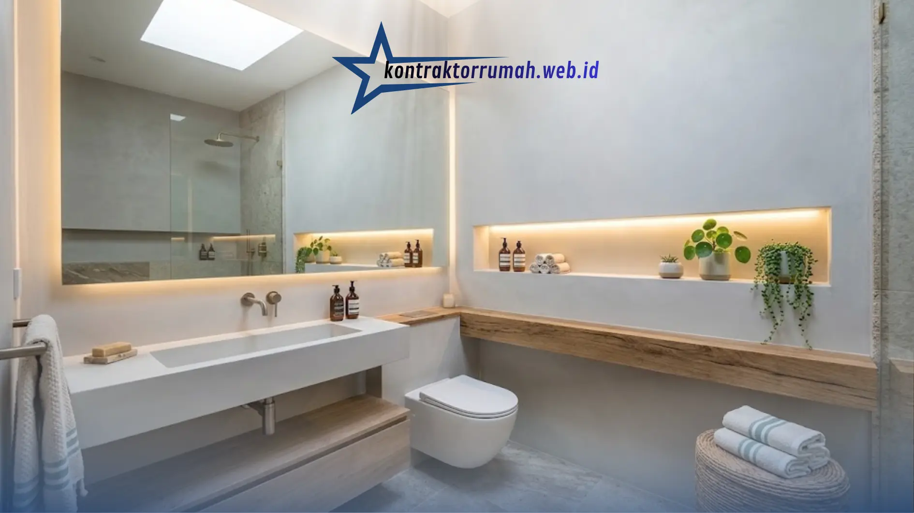

Punya kamar mandi mungil sering bikin serba salah. Menambah rak terasa memakan tempat, sementara membiarkan perlengkapan mandi berserakan bikin ruangan tampak sumpek. Padahal kamar mandi dipakai setiap hari, sehingga kenyamanannya sangat memengaruhi suasana rumah.
Kabar baiknya, ukuran yang terbatas bukan penghalang. Dengan pemilihan warna, perabot, dan tata letak yang tepat, kamar mandi kecil bisa tampil estetik, fungsional, dan terasa jauh lebih luas. Berikut enam idenya, lengkap dengan catatan penting agar hasilnya maksimal.
Poin Penting
- Warna cerah dan cermin besar memantulkan cahaya dan menciptakan ilusi ruang yang lebih luas.
- Sanitari gantung mengosongkan lantai sehingga kamar mandi terasa lega dan mudah dibersihkan.
- Sekat kaca tempered bening menjaga pandangan tetap menyatu, jauh lebih lega dibanding tirai tebal.
- Pindahkan penyimpanan ke dinding lewat niche waterproof dan rak melayang tahan lembap.
- Cahaya dan ventilasi yang baik mencegah kamar mandi terasa pengap, lembap, dan berjamur.
1. Pilih Warna Cerah dan Pasang Cermin Besar
Dinding gelap cenderung menyerap cahaya sehingga ruangan terasa lebih sempit. Sebaliknya, warna netral seperti putih, krem, atau abu-abu muda memantulkan cahaya dengan baik dan membuat ruangan tampak lapang.
Lengkapi dengan cermin besar berbingkai tipis (atau tanpa bingkai) di atas wastafel. Pantulan ruangan di cermin menciptakan ilusi ruang yang lebih dalam dan luas.
Tips: Pilih keramik dinding berukuran besar dengan nat (garis sambungan) tipis dan warna senada. Garis yang lebih sedikit membuat permukaan tampak menyatu dan tidak "terpotong-potong".
2. Beralih ke Sanitari Gantung (Wall-Hung)
Lantai yang terlihat lapang membuat seluruh ruangan terasa lebih lega. Karena itu, sanitari gantung menjadi salah satu solusi paling efektif untuk kamar mandi kecil.
- Kloset gantung: Tangki air tertanam di dalam dinding, sehingga hanya dudukan kloset yang terlihat melayang. Bagian bawahnya kosong sehingga lantai lebih mudah dibersihkan.
- Wastafel tempel dinding: Ruang kosong di bawahnya bisa dipakai untuk menaruh keranjang handuk atau pakaian kotor, atau dibiarkan kosong agar tampak lapang.
Catatan penting: Kloset gantung membutuhkan rangka penopang (in-wall frame) yang kokoh dan pemasangan oleh tukang berpengalaman. Pastikan juga ada akses servis ke tangki agar perawatan tidak merepotkan di kemudian hari.
3. Ganti Tirai Tebal dengan Sekat Kaca Bening
Area basah dan kering memang perlu dipisahkan agar air tidak menyebar. Namun, tirai plastik tebal atau tembok penuh justru memotong pandangan dan membuat ruangan terasa sesak.
Sekat kaca tempered bening (frameless) menjaga aliran pandangan tetap menyatu dari satu sudut ke sudut lain. Kaca tempered juga lebih aman karena, jika pecah, kepingannya tidak setajam kaca biasa.
Tips: Lapisi kaca dengan water repellent coating atau bersihkan dengan rakel setelah mandi agar tidak muncul noda air dan kerak.
4. Manfaatkan Dinding untuk Penyimpanan
Saat luas lantai terbatas, arahkan penyimpanan ke dinding. Lemari berdiri biasa hanya akan menghabiskan ruang gerak. Sebagai gantinya:
- Niche dinding: Buat cerukan di dinding untuk sabun dan sampo, idealnya direncanakan sejak tahap pembangunan atau renovasi. Tampilannya jauh lebih rapi dibanding rak kawat gantung.
- Rak melayang (floating shelf): Manfaatkan area di atas kloset untuk gulungan handuk, lilin aromaterapi, atau dekorasi kecil.
Catatan penting: Niche harus dilapisi waterproofing dan dibuat sedikit miring ke arah luar agar air tidak menggenang di dalamnya. Untuk rak, pilih bahan tahan lembap seperti kayu olahan berlapis anti-air, kaca, atau besi anti-karat (stainless steel).
5. Atur Pencahayaan dan Ventilasi dengan Baik
Kamar mandi yang remang-remang terasa lebih sempit dan pengap. Jika memungkinkan, buat jendela ventilasi kecil atau skylight agar cahaya matahari bisa masuk. Cahaya alami membuat ruangan terasa segar dan membantu mencegah kelembapan berlebih serta jamur.
Jika tidak ada akses jendela, kombinasikan lampu utama yang terang dengan LED strip warm white tersembunyi di balik cermin atau di bawah rak. Efeknya hangat dan elegan, mirip kamar mandi hotel.

Niche dinding yang rapi dipadukan LED strip warm white tersembunyi membuat kamar mandi mungil terasa hangat dan elegan.
Tambahan: Pasang exhaust fan untuk mengalirkan udara lembap keluar, terutama jika kamar mandi tidak punya jendela. Pilih juga lampu yang aman untuk area lembap (rating IP yang sesuai).
6. Tambahkan Sentuhan Alami agar Tidak Terkesan Dingin
Agar kamar mandi mungil tidak terasa steril, tambahkan tekstur dan elemen alam. Kamu bisa memasang keramik motif kayu pada satu sisi dinding sebagai aksen, atau menaruh tanaman tahan lembap seperti lidah mertua, sirih gading, atau monstera dalam pot kecil.
Catatan penting: Tanaman tetap butuh cahaya. Jika kamar mandi minim cahaya alami, pilih tanaman yang toleran terhadap cahaya rendah seperti lidah mertua atau sirih gading, atau gunakan tanaman artifisial berkualitas baik.
Kesalahan yang Sering Terjadi
- Terlalu banyak dekorasi. Ruang kecil cepat terlihat penuh jika aksesorinya berlebihan.
- Mengabaikan lantai. Pilih keramik lantai bertekstur atau anti-selip, dan pastikan kemiringan lantai mengarah ke saluran pembuangan agar air tidak menggenang.
- Mencampur terlalu banyak motif dan warna. Pilih satu titik aksen saja, misalnya satu dinding bermotif kayu.
- Lupa merencanakan sejak awal. Niche, rangka kloset gantung, dan instalasi pipa sulit diubah setelah dinding selesai.
FAQ Seputar Desain Kamar Mandi Kecil
Menata kamar mandi kecil sebenarnya soal keberanian membuang yang tidak perlu dan memprioritaskan fungsi utama. Ringkasnya: pilih warna terang, angkat perabot dari lantai, jaga pandangan tetap terbuka dengan kaca bening, pindahkan penyimpanan ke dinding, perhatikan cahaya dan ventilasi, lalu tambahkan sedikit sentuhan alami.
Mulailah dari satu atau dua ide yang paling mudah diterapkan, misalnya mengganti warna dan memasang cermin besar. Sedikit demi sedikit, kamar mandi kecil kamu akan berubah menjadi sudut rumah yang nyaman dan menyegarkan setiap hari. Jika butuh pendamping tepercaya, tim jasa desain interior Kontraktor Rumah siap membantu dari perencanaan hingga pengerjaan tuntas.